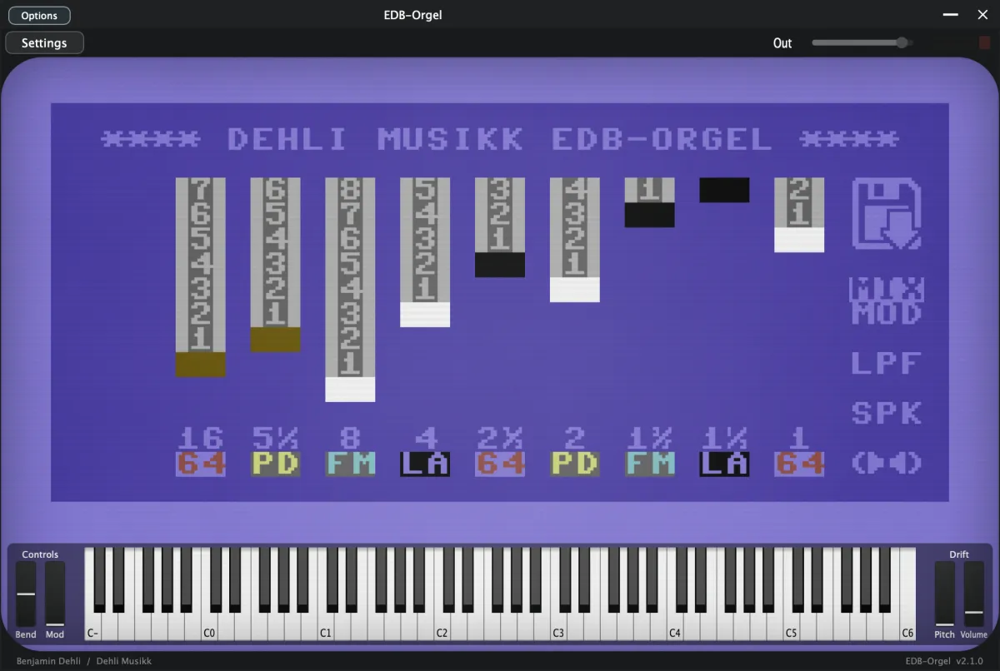
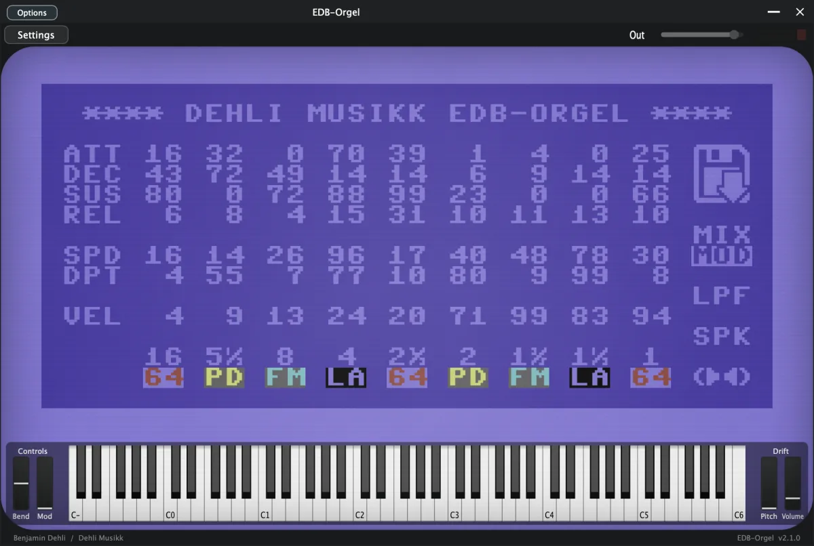
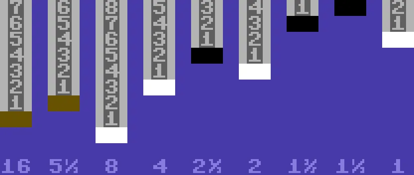
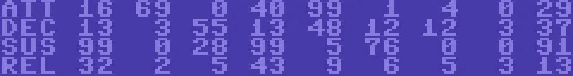
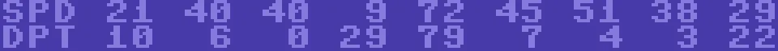
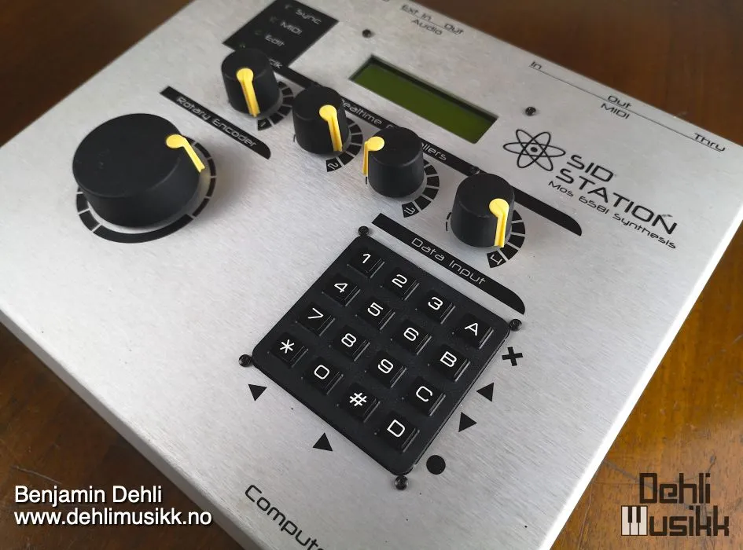
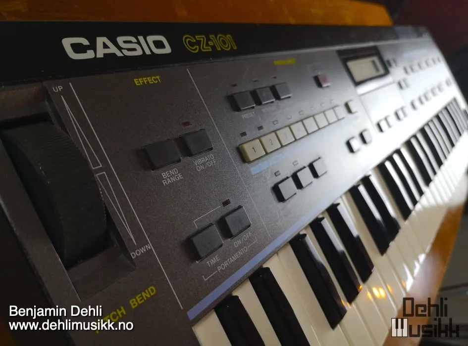
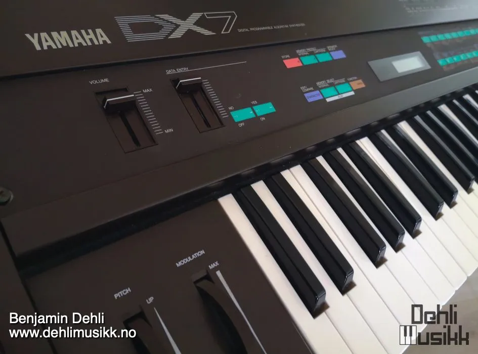
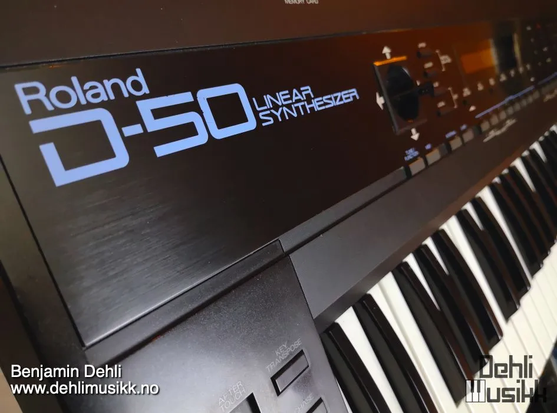

Video
A demonstration of the EDB-Orgel library for Decent Sampler.
EDB-Orgel for Decent Sampler — Watch on YouTube
Included formats
- VST3 (macOS)
- AU (macOS)
- Standalone application (macOS)
- Decent Sampler (macOS, Windows and Linux)
The plugin version is currently released for macOS only. Windows and Linux versions are planned. Until then, the Decent Sampler version covers those platforms.
The plugin version
The plugin is a self-contained instrument, available as VST3, AU and Standalone. Samples, graphics and impulse responses are all embedded in the plugin itself, losslessly compressed, so there are no external files to install or locate.
The plugin has all the controls and features from the Decent Sampler version, including MIDI learn, the master volume fader with output meter, value readouts for the knobs and full DAW automation. On top of that, the plugin version adds:
- Drift wheels next to the pitch and modulation wheels, adding a subtle random pitch and volume drift to each voice.
- A velocity curve setting in the settings menu.
The Decent Sampler version
This version of EDB-Orgel is an instrument preset / sample library for Decent Sampler. If you're new to Decent Sampler, I recommend checking out this guide first.
Technical specification
| Sample rate | Bit depth | Channels | Number of files | File size | |
|---|---|---|---|---|---|
| Samples | 48 kHz | 24 bit | 1 (mono) | 532 | 974.80 MB |
| Impulse responses | 48 kHz | 24 bit | 1 (mono) | 8 | 85.00 KB |
User Interface
The user interface offers precise control over every aspect of the instrument and effects. Explore parameters to refine your sound, including volume control and sound source selection for the nine drawbars, ADSR envelope, amplitude modulation (tremolo) with LFOs, velocity sensitivity, different filter types, speaker simulation, stereo widener and vibrato controlled by the modulation wheel.
Tabs
 |  | |
|---|---|---|
| Mixer tab | Modulation tab | Patch dialog |
To accommodate all the controls, they are organized into two separate tabs and a dialog window.
| Open patch dialog | Toggle between mixer and modulation tab |
The button with a floppy disk icon, opens a dialog window for loading predefined patches. The MIX/MOD button allows you to toggle between a mixer view with drawbars, and a modulation view with various modulation controls for further sound customization.
Drawbars

Unleash the power of the nine drawbars to shape your organ's tone with precision. Each drawbar controls the amplitude of a specific harmonic overtone, offering you unparalleled control over the instrument's harmonic richness.
Sound source
- 64 (Commodore 64)
- The MOS Technology 6581 Sound Interface Device (SID) was used in devices such as the Commodore 64 and Elektron SidStation.
- PD (Phase Distortion)
- Phase distortion synthesis is a technique that was used in Casio synthesizers from the CZ range, such as the Casio CZ-1 and the Casio CZ-101.
- FM (Frequency Modulation)
- Frequency modulation synthesis is a widely used technique in various devices including AdLib and Sound Blaster sound cards, Sega Genesis (Mega Drive) video game consoles, and synthesizers like the New England Digital Synclavier and the Yamaha DX-7.
- LA (Linear Arithmetic)
- Linear arithmetic synthesis is a method used in synthesizers such as the Roland MT-32 sound module and the Roland D-50 synthesizer.
ADSR Envelope

Shape your sound precisely with the Attack, Decay, Sustain, and Release parameters. Whether you desire a punchy, staccato tone or a smooth, lingering ambiance, the ADSR envelope allows you to tailor the dynamics to your liking.
- ATT (attack)
- Individual attack time of the amplitude envelope for each drawbar
- DEC (decay)
- Individual decay time of the amplitude envelope for each drawbar
- SUS (sustain)
- Individual sustain level of the amplitude envelope for each drawbar
- REL (release)
- Individual release time of the amplitude envelope for each drawbar
Tremolo

The speed (SPD) and depth (DPT) controls enable you to modulate the amplitude of the drawbars with the desired speed and depth using the Low-Frequency Oscillator (LFO).
- SPD (speed)
- Tremolo speed determines the speed at which the modulation occurs
- DPT (depth)
- Adjust tremolo depth to introduce subtle or pronounced variations in volume
Velocity sensitivity
- VEL (velocity sensitivity): Determines whether the velocity should affect the volume of the drawbar
Filters
EDB-Orgel features the different filter types you get from the SID chip. These are impulse responses (IR) of the filters in the MOS Technology 6581 chip. Cutoff frequency and resonance amount for each filter is set to a fixed value.
- OFF: Filter is disabled
- LPF: Low Pass Filter
- BPF: Band Pass Filter
- L/B: Low Pass Filter and Band Pass Filter
- HPF: High Pass Filter
- L/H: Low Pass Filter and High Pass Filter
- B/H: Band Pass Filter and High Pass Filter
- ALL: Low Pass Filter, Band Pass Filter and High Pass Filter
Output
- DIR (Direct)
- The direct sound of the line output
- SPK (Speaker)
- The sound of a tiny computer speaker miced with a Shure SM57
Mono/Stereo
- 1 speaker (mono): Stereo effect is disabled
- 2 speakers (stereo): Stereo effect is enabled
Equipment used

Elektron SidStation
Casio CZ-101
Yamaha DX7
Roland D-50
Release notes
Version 2.1.02026-08-01
The changes in this release apply to the plugin version only. The DecentSampler version is unchanged.
- Added a translucent overlay graphic on top of the interface.
- Keys that are hovered or held on the keyboard are now shaded in a neutral way instead of turning yellow:
- White keys turn darker.
- Black keys turn brighter.
- The computer keyboard keeps playing notes even while you adjust a control with the mouse.
- The dropdown menus inside the interface now use colors that match the instrument.
Version 2.0.02026-07-19
- Added a plugin version. See the section "The plugin version".
- Corrected the UI values and the polarity for the drawbars.
- Fixed the mislabeled 5 1/3' drawbar control name.
- Fixed the swapped envelope tooltips on the 16' drawbar.
- Renamed the hidden vibrato control, which was mislabeled "Velocity sensitivity 1".
- Removed duplicated tremolo modulator bindings.
- Removed a dead gain binding in the filter OFF state.
Version 1.0.02024-08-08
- First version released
About this repository
This repository contains the source for both the Decent Sampler library (the DecentSampler folder) and the plugin version. The plugin is a thin wrapper around the shared Dehli Musikk sampler engine, and a converter translates the Decent Sampler library into the engine's native preset format at build time. The audio files are not part of this repository, since the samples are a paid product. The full version is available from store.dehlimusikk.no.